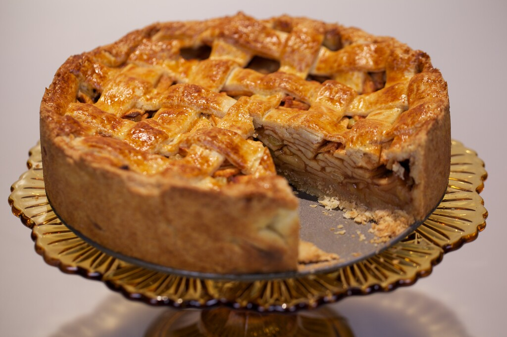

Verse Ingrediënten: We geloven in het gebruik van de beste, verse appels die we kunnen vinden. Het begint allemaal met de kwaliteit van de appels. We selecteren alleen de rijpste en smaakvolste om de vulling te bereiden.
Geheime Recepten: Onze appeltaart is gebaseerd op geheime familierecepten die generaties lang zijn doorgegeven. Deze recepten bevatten de perfecte balans van kruiden en specerijen, waardoor onze appeltaart een unieke en onvergetelijke smaak heeft.
Handgemaakt Vakmanschap: Elke appeltaart wordt met de hand gemaakt door ervaren bakkers met een passie voor hun vak. Van het schillen en snijden van de appels tot het rollen van het deeg, elk aspect van het bakproces wordt met zorg uitgevoerd.
Krokante Korst: Onze appeltaart staat bekend om zijn krokante korst, die de perfecte textuur en smaakcombinatie biedt met de zachte, gekruide appels. We besteden speciale aandacht aan het deeg om ervoor te zorgen dat het altijd perfect gebakken is.
Klanttevredenheid: Het belangrijkste is dat onze klanten van onze appeltaart genieten en blijven terugkomen. Hun tevredenheid en loyale steun zijn de beste beloning voor onze inspanningen.
